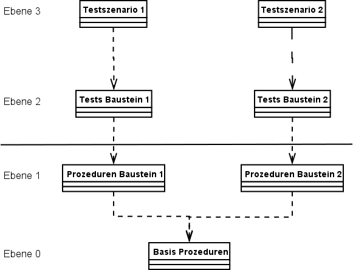
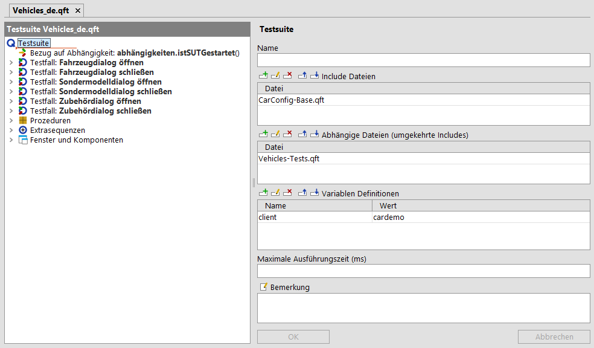
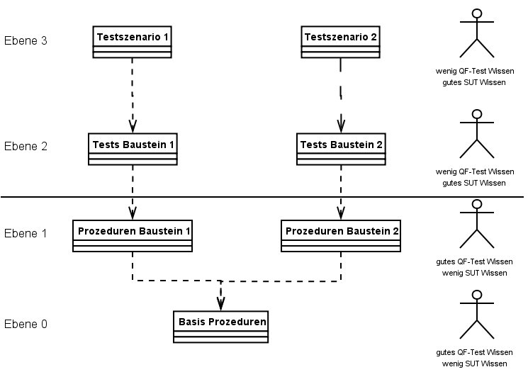

| Version 6.0.3 |
Eine der herausforderndsten Aufgaben eines Testprojektes ist, die Testsuiten über einen langen Zeitraum wartbar zu gestalten. Besonders dann, wenn sich das eine oder andere Fenster oder sogar der Bedienungsablauf signifikant ändert, sollte der Wartungsaufwand so minimal wie möglich sein.
Sie sollten auch darüber nachdenken wie man den Erstellungsaufwand von Tests minimiert; insbesondere, wenn diese eine große Menge an ähnlichen oder sogar gleichen Schritten beinhalten. Ein typischer Anwendungsfall ist das Starten des SUT oder ein Login-Prozess oder ein sehr wichtiger Basisworkflow wie das Navigieren zu einem bestimmten Punkt des SUTs.
Ein weiterer Aspekt ist, wie Testsuiten effizient organisiert werden, wenn unterschiedliche Leute im Projekt involviert sind.
3.5+ Auf jeden Fall sollten Sie Ihre Testsuiten in einem QF-Test Projekt, wie unter Kapitel 9 beschrieben erstellen, um einen besseren Überblick über Ihre Testsuiten und Verzeichnisse zu bekommen.
Die folgenden Abschnitte zeigen nun einige Best Practices auf, wie Sie Tests wartbar, erweiterbar und gut organisiert gestalten können.
In Abschnitt 8.2 werden die Konzepte der 'Testfallsatz' und 'Testfall' Knoten beschrieben. Ein 'Testfall' Knoten steht für einen dedizierten Testfall und seine Testdaten. Ein typischer Testfall kann von Use-Cases, von Anforderungen oder von einer Defektbeschreibung in Ihrer Umgebung abgeleitet werden, z.B. 'Kalkulation des Preises von Fahrzeug xyz mit 10% Rabatt' in der JCarConfigurator Applikation.
'Testfallsatz' Knoten sind Sammlungen von 'Testfallsätze' und 'Testfälle'. Diese Knoten können Sie für die Strukturierung von Testfällen einsetzen, z.B. 'Tests für Preiskalkulation'.
'Testschritt' Knoten repräsentieren individuelle Testschritte eines 'Testfall' Knotens, wie 'Öffne das Fenster' oder 'Prüfe Berechnung'.
Falls Sie eine externe Beschreibung des Testfalls oder andere relevante Informationen mit dem 'Testfall' verknüpfen wollen, dann sollten Sie einen HTML Link in das 'Bemerkung' Attribut des 'Testfall' Knotens aufnehmen. Sie werden diesen Link auch später im Report sehen. Des Weiteren ist es möglich, eine separate Testdokumentation mittels der Menüaktion »Datei«-»Testdoc erstellen« zu erzeugen. Weitere Details über die Dokumentation finden Sie unter Kapitel 21.
3.1+Der Report und die Testdokumentation können auch 'Testschritt' Knoten, welche in 'Testfall' Knoten benutzt werden, beinhalten.
Wenn ein 'Testfall' aus vielen 'Prozeduraufrufen' oder 'Sequenzen' besteht, dann sollten Sie die einzelnen Testschritte in 'Testschritt' Knoten organisieren. Diese 'Testschritt' Knoten haben den Vorteil, dass Sie jeden relevanten Testschritt in QF-Test auf einen Blick sehen und diese auch im Report nach der Ausführung aufgeführt werden.
Wenn Sie mehrere Knoten in einem 'Testschritt' zusammenfassen wollen, dann können Sie diese Knoten in einen 'Testschritt' packen. Hierzu selektieren Sie die betroffenen Knoten, führen einen Rechtsklick aus und wählen »Knoten einpacken«-»Testschritt« im Kontextmenü aus.
Eines der wichtigsten Konzepte einer effektiven Testautomatisierung ist die Modularisierung. Modularisierung in diesem Bereich steht für das Ablegen von wiederverwendbaren Sequenzen an einer bestimmten Stelle, damit diese von überall her aufgerufen werden können, wenn möglich. Dieses Konzept ermöglicht es Ihnen, eine Sequenz nur einmal zu erstellen, aber diese so oft wie benötigt zu benutzen ohne die Sequenz erneut aufzuzeichnen. Falls sich das SUT in einer dieser wiederverwendbaren Sequenzen ändern sollte, z.B. eine Änderung eines Basisworkflows, dann müssen Sie diese Änderung nur an einer Stelle, nämlich der wiederverwendbaren Sequenz, anpassen und nicht in mehreren Testfällen in unterschiedlichen Testsuiten.
Modularisierung wird in QF-Test mittels 'Prozedur' Knoten realisiert. Prozeduren sind im Abschnitt 8.5 beschrieben.
Wenn Sie eine große Menge an Testfällen haben, sollte fast jeder Testschritt eine 'Prozedur' sein und Sie könnten diese Prozeduren vorab erstellen, wenn möglich. Danach können Sie die Testfälle mit diesen Prozeduren füllen und das nur mittels Hinzufügen des jeweiligen 'Prozeduraufruf' Knotens.
In größeren Projekten kann es ebenfalls nützlich sein, 'Prozeduren' in unterschiedlichen Schichten zu erstellen, z.B. komponentenspezifische Prozeduren wie 'Klick auf OK' und workflowspezifische Prozeduren wie 'Ein Fahrzeug anlegen'.
Das Konzept der Modularisierung ermöglicht es, Testschritte an einer zentralen Stelle zu pflegen. Aber was ist mit den Testdaten für verschiedene Tests?
Wenn Sie eine 'Prozedur' erstellt haben, welche mit unterschiedlichen Testdaten aufgerufen werden kann, z.B. ein typischer 'Login' Ablauf mit Benutzernamen und Passwort oder die 'Zubehör auswählen' Prozedur des JCarConfigurators, dann können Sie Variablen in den QF-Test Knoten verwenden. Diese Variablen sollten für einen 'Texteingabe' Knoten, für die Auswahl von Elementen in einer Liste oder Tabelle oder Auswahl eines Baumknotens verwendet werden.
Wenn eine Prozedur Variablen benötigt, dann sollten Sie diese in der Liste 'Variablen Definitionen' definieren. Dies dient dazu, eine Liste aller benötigten Parameter bei jedem Einfügen eines 'Prozeduraufruf' Knotens der 'Prozedur' zu bekommen. Einige Kunden benutzen für diese Standardwerte sogar Dummywerte, damit man sofort merkt, dass ein Parameter nicht vom Test initialisiert wurde.
Der nächste Schritt ist nun, die Variablen vom 'Prozeduraufruf' entweder in die 'Variablen Definitionen' Liste des 'Testfall' Knotens oder in einen 'Datentreiber' mit einer 'Datentabelle' oder sonstigen externen Datenquelle zu verschieben.
Variablen und Parameter sind im Abschnitt 8.5 beschrieben. Parameter können auch automatisch erstellt werden, siehe Abschnitt 8.5.4. Sie finden weitere Details über das Datentreiber Konzept für das Laden von Testdaten aus Datenquellen in Kapitel 20.
Bis jetzt haben Sie die Modularisierung und Parametrisierung Konzepte kennen gelernt, mit denen Sie redundante und damit nicht notwendige Arbeiten während der Testerstellung vermeiden können. Sie sollten gemerkt haben, dass sich mit diesen Konzepten natürlich auch der Wartungsaufwand der Testsuiten im Falle von Änderungen reduzieren lässt, da Sie Änderungen nur einmal statt öfters durchführen. Aber wie können wir die Arbeit für mehrere Testentwickler oder für ein sehr großes Projekt mit vielen GUI Komponenten aufteilen?
Die Antwort für eine effektive Arbeitsorganisation kommt wiederum aus der Softwareentwicklung. Wir sollten unterschiedliche 'Bibliotheken' für unterschiedliche Bereiche und unterschiedliche Zuständigkeiten erstellen.
Verbinden von Testsuiten untereinander ermöglicht es Ihnen, eine Kapselung der Testsuiten durchzuführen. Eine typische Struktur in Projekten könnte in etwa so aussehen:
|
|  | ||
|
| Abbildung 33.1: Struktur mit mehreren Testsuiten | ||
Ebene 0 beinhaltet Testschritte (d.h. 'Prozeduren'), welche für fast alle Testfälle im Projekt von Interesse sind. Solche Testschritte sind beispielsweise 'SUT starten' oder 'Login ausführen'.
Ebene 1 enthält Testschritte für bestimmte Bereiche des SUT. Für den JCarConfigurator könnte man sich beispielsweise die Testsuite 'Fahrzeuge', welche 'Prozeduren' wie 'Fahrzeug erstellen' oder 'Fahrzeug löschen' beinhaltet, und eine weitere Testsuite 'Zubehör', welche 'Prozeduren' wie 'Zubehör anlegen' oder 'Zubehör löschen' beinhaltet, vorstellen.
Ebene 2 ist die Testfallebene. Diese beinhaltet 'Testfälle' und 'Testfallsätze' für einen bestimmten Bereich des SUT, z.B. 'Tests für Anlage von Fahrzeugen' oder 'Tests für Löschen von Zubehör'. Es ist auch möglich sich Testsuiten, wie 'Integrationstests', welche Testschritte aus unterschiedlichen Bereichen der Ebene 1 und Ebene 0 aufrufen, auszudenken.
Ebene 3 ist die so genannte Szenarioebene. Diese Testsuiten beinhalten normalerweise nur 'Testaufrufe' aus Ebene 2 und stehen für unterschiedliche Szenarien, z.B. 'Nächtliches Testszenario', 'Fehlerverifikationsszenario' oder 'Schnelle Buildverifikation'.
Hinweis Die Struktur, die in diesem Dokument beschrieben wird, ist natürlich nur als Vorschlag und eine mögliche Lösung zu sehen, wie man Testsuiten organisiert. Das ist keine strenge Regel, die unbedingt befolgt werden muss. Sie könnten auch Ebene 1 in eine GUI-Komponenten-Ebene und eine Workflow-Ebene aufteilen oder Ebene 2 und Ebene 3 zusammenlegen. Welche Struktur Sie schlussendlich verfolgen, hängt auch von den Erfahrungen und Fähigkeiten Ihrer im Projekt involvierten Testentwickler ab.
Der 'Include' Bereich von Ebene 1 Testsuiten sieht wie folgt aus:
|
|  | ||
|
| Abbildung 33.2: 'Include' Bereich von Ebene 1 Testsuiten | ||
Sie finden genauere Informationen über das Inkludieren von Testsuiten unter Abschnitt 23.1 und Abschnitt 45.6.
Im Abschnitt 34.5 finden Sie eine Schritt-für-Schritt Beschreibung, wie Sie bereits erstellte Testsuiten erweitern können. Im Abschnitt 34.4 finden Sie Strategien für die Verwaltung von Komponenten.
Wenn Sie einen näheren Blick auf den vorigen Abschnitt 33.4 werfen, können Sie feststellen, dass man Testsuiten auch anhand von unterschiedlichen Fähigkeiten der Tester strukturieren kann.
|
|  | ||
|
| Abbildung 33.3: Struktur von Testsuiten mit Rollen | ||
Ebene 0 und Ebene 1 erfordern gute Kenntnisse in QF-Test, aber nicht unbedingt ein tiefes Wissen über das SUT. Andererseits erfordern Ebene 2 und Ebene 3 sehr gute Kenntnisse des SUT und der geplanten Testfälle, allerdings kein großes Wissen über QF-Test, so lange diese nur Prozeduren von Ebene 0 und Ebene 1 verwenden.
Tester, die in Ebene 0 und Ebene 1 arbeiten, sollten in der Lage sein, Skripte oder Kontrollstrukturen (wie das 'Try'/'Catch' Konzept), welche die Erstellung einer mächtigen Testbibliothek ermöglichen, umzusetzen. Mindestens einer dieser Tester sollte auch über ein sehr gutes Wissen verfügen, wie die QF-Test Komponentenerkennung funktioniert. Diese ist beschrieben in den Kapiteln Kapitel 5, Abschnitt 5.9 und Abschnitt 5.3.
Hinweis Falls Sie alleine in einem Projekt arbeiten, sollten Sie zumindest Tests und Prozeduren voneinander trennen, um die Wartbarkeit zu erleichtern. Arbeiten in mehreren Testsuiten ist einfacher als alles in einer großen Testsuite zu halten.
Wenn Sie den Ansatz des vorigen Abschnittes (Abschnitt 33.4) befolgen, dann müssen Sie noch klären, wo die Komponenten abgelegt werden sollen. Hier gibt es zwei Möglichkeiten:
Es ist die einfachste Lösung, alle Komponenten in Ebene 0 zu speichern. Allerdings führt das zu sehr häufigen Änderungen von Ebene 0, nur weil sich einige Komponenten geändert haben. Sie müssen auch Zuständigkeiten definieren und eine saubere Struktur beibehalten.
In großen Projekten können Sie sich überlegen, allgemeine Komponenten wie die Loginmaske und die Navigationselemente - also Komponenten, die für jeden wichtig sind - in Ebene 0 zu speichern. Komponenten, welche nur für einen bestimmten Bereich interessant sind, sind allerdings in der jeweiligen Testsuite der Ebene 1 zu speichern, z.B. ein Fahrzeugdialog für den JCarConfigurator sollte nur in der Fahrzeuge.qft Testsuite gespeichert werden.
Der Arbeitsablauf wie man Komponenten zwischen unterschiedlichen Testsuiten verschiebt ist im Abschnitt 34.4 beschrieben. Eine Beschreibung, wie man bereits bestehende Testsuiten erweitert, finden Sie in Abschnitt 34.5.
3.5+ Für Testsuiten die zu einem QF-Test Projekt gehören, wie unter Kapitel 9 beschrieben, brauchen Sie sich nicht um 'Abhängige Dateien' zu kümmern. QF-Test übernimmt die Anpassungen der Testsuiten automatisch für Sie.
Wenn Sie mit unterschiedlichen Testsuiten arbeiten, dann kommt es manchmal vor, dass Sie eine 'Prozedur' oder einen 'Testfall' umbenennen oder verschieben. Falls Sie das tun, werden die Referenzen zu dieser 'Prozedur' oder zum 'Testfall' in anderen Testsuiten nicht angepasst. Wenn Sie diese Änderungen auch zu anderen Testsuiten propagieren wollen, müssen Sie diese Testsuiten im Attribut 'Abhängige Dateien' des Wurzelknotens der Bibliothek pflegen.
Wenn Sie den Ansatz aus Abschnitt 33.4 folgen, sollten Sie sicherstellen, dass Ebene 0 'Umgekehrte Includes' auf alle Suiten von Ebene 1, Ebene 1 auf Ebene 2 und Ebene 2 auf Ebene 3 enthält. Ein Beispiel aus den Demotestsuiten finden Sie in Abbildung 33.2.
| Letzte Änderung: 6.9.2022 Copyright © 1999-2022 Quality First Software GmbH |